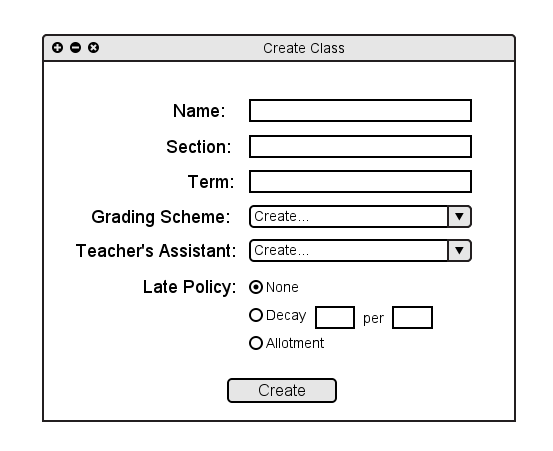
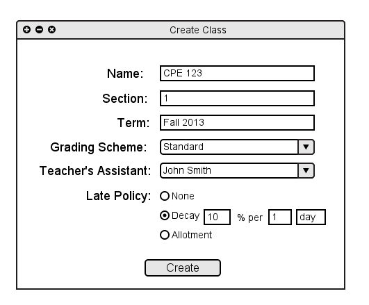
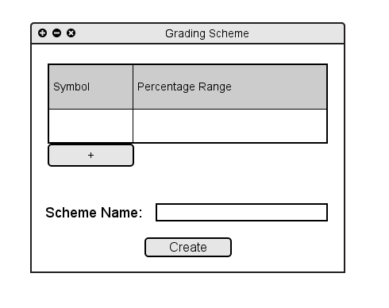
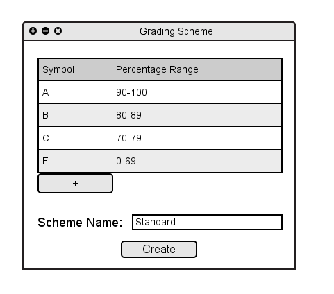
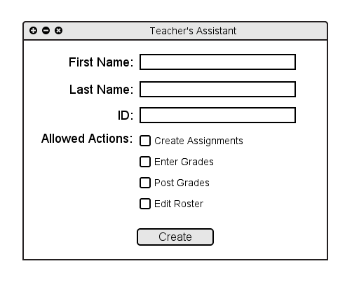
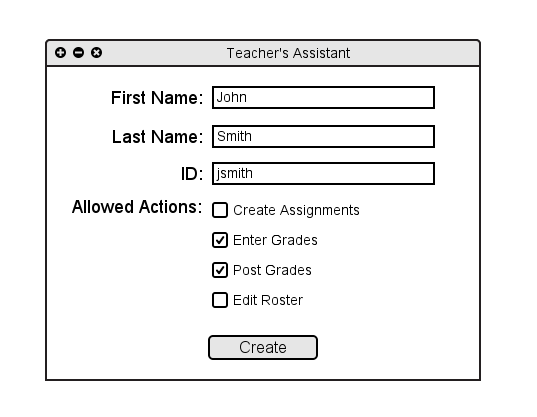
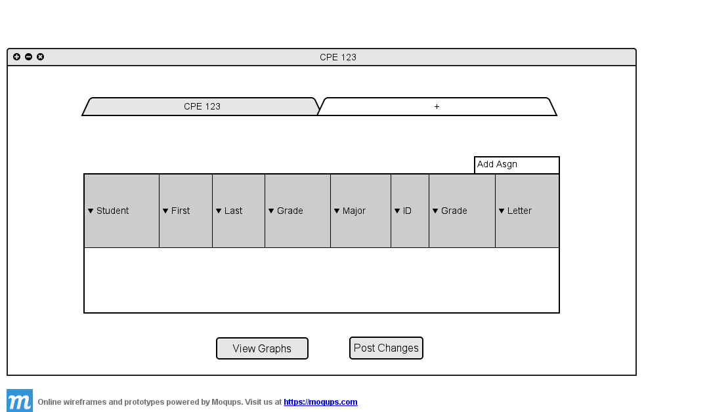

When a teacher "drives up" to the grader, they will see an empty spreadsheet, as shown in Section 2.1.1
From here, the teacher can select 'Add Class' from the 'Classes' menu, or they can use the shortcut and click on the plus button. Both of these options are shown in Section 2.1.1.
Both of these actions will cause the Create Class window to appear, as shown in Figure 2.2.1 A below.

Figure 2.2.1 A: Create Class dialog.
The teacher will supply the basic information for the new class. Name is the name of class. Section is the section number of the class. Term is the season and year of the class.
Grading scheme is the set of percentages and associated grades; this is discussed in further detail below. Teacher's assistant is where the teacher can create a role for another user to perform grading operations;
this is discussed in further detail below. Late policy defines how later assignments are graded; this can be a choice of three options. None means no late assignments are accepted. Decay means
that for every specified period of time (1 day, for example), a specified percentage is taken off. Allotment means students have a specified number of late days to use as they wish. For example a student
may wish to turn in one assignment 5 days late, but then everything else on time. A different student may wish to turn in 5 different assignments each 1 day late.

Figure 2.2.1 B: Create Class dialog filled in.
Above, in Figure 2.2.1 B, is an example of a completed entry to create a new class. Below shows how the Grading Scheme was created and selected as well as the Teacher's Assistant was created and selected.

Figure 2.2.1 C: Creating a new grading scheme.

The teacher enters a symbolic grade, such as an A and a corresponding range, such as 90-100.
To add another level of grades, the teacher clicks on the plus button. This brings up a new row which can be filled in in the same fashion.
This process is continued until the teacher has created all levels of grades they need.
The teacher also names the scheme ('Standard', for example) so they can retrieve it for a different class and avoid having to repeat the previous step of entering symbols and ranges.
Figure 2.2.1 D below shows a completed and names grading scheme ready for creation.
Once the rows are done and a name is given, the teacher clicks 'Create' and the 'Create Class' dialog now has 'Standard' as its selected grading scheme.
Figure 2.2.1 D: Creating a new grading scheme.

Figure 2.2.1 E: Creating a new TA.

The teacher enters information for a new Teacher's Assistant. The allowable actions category lets the teacher decide which operations they want to let the assistant complete for them
Figure 2.2.1 F: Creating a new TA.

Figure 2.2.1 G: Resulting spreadsheet.